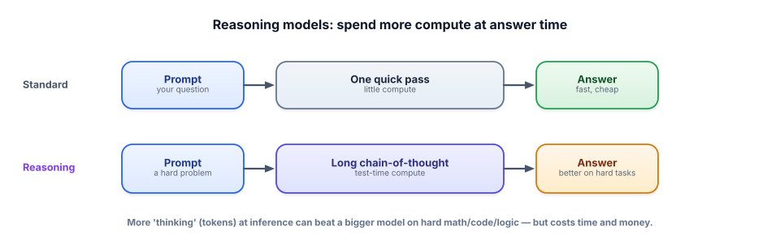

Reasoning models & test-time compute
A normal model starts writing its answer straight away.
A reasoning model first writes out its thinking, step by step, and checks itself before it answers.
That extra work at answer time is called test-time compute.
It makes models much better at maths, code and multi-step planning.
But thinking tokens cost money and time, so you only want it on hard problems.
A standard model is a quiz contestant who must hit the buzzer immediately. A reasoning model is allowed to scribble on a notepad for a minute before answering. On a hard maths question the notepad wins; on 'what colour is the sky' it just wastes a minute. And you pay for every page of scribbling.
| In the picture | In the real system |
|---|---|
| Hitting the buzzer straight away | One quick pass: the model writes only the answer |
| Scribbling on the notepad | Thinking tokens written before the final answer |
| Paying for every page of scribbling | Thinking tokens are billed as output tokens |
| How long you are allowed to scribble | The effort level (low to max); the model decides how much to think |
| Not wasting a minute on 'what colour is the sky' | Routing easy requests to low effort or a cheaper model |
Where the picture breaks. The model's scribbling is not always shown to you, but you are still billed for it.
max_tokens is the hard limit.Going deeper
A major shift in the field: instead of only making models bigger, we now let them think longer at answer time. Understanding “reasoning models” and “test-time compute” keeps you current and helps you choose the right model for a job.
Two ways to make a model smarter
For years, the recipe for a more capable model was “train a bigger one on more data.” That still works, but there’s a second lever that reshaped the field: spend more compute when answering, not just when training. A reasoning model (sometimes called “o1-style,” after an early prominent one) is trained to produce a long internal chain-of-thought — working through a problem step by step, checking itself, exploring approaches — before it commits to a final answer. That extra deliberation at inference is called test-time compute: the model literally uses more tokens and time to think, and on hard problems that buys markedly better accuracy.
You already met the seed of this in Track 2: chain-of-thought prompting (“think step by step”) improves reasoning. Reasoning models bake that in and take it much further, having been trained specifically to reason at length and self-correct. The result is a model that’s dramatically stronger on math, coding, logic, and multi-step planning — the tasks where a single quick pass tends to slip.

When to reach for one (and when not)
Reasoning models aren’t a free upgrade — they’re a trade. Because they generate a long internal reasoning process, they’re slower and more expensive per answer (you pay for all those thinking tokens). So the choice is task-driven. For hard, multi-step problems — complex math, tricky debugging, planning, careful analysis — the accuracy gain is well worth the cost.
For simple, high-volume tasks — classification, extraction, straightforward Q&A, formatting — a standard (often smaller) model is faster, cheaper, and just as good; paying a reasoning model to “think hard” about a trivial task is waste. This is a natural extension of model routing from Track 8: send the genuinely hard requests to a reasoning model and everything else to a cheaper one.
Specific model names, prices, and benchmarks change monthly, so don’t memorize them — memorize the principle: capability can come from more training or more inference-time thinking, and thinking longer trades cost/latency for accuracy on hard problems. That framing stays true no matter which model is on top this quarter. Always check current options before choosing.
Buy accuracy with compute
Increase the number of reasoning passes. Accuracy rises, then flattens, while cost and latency keep climbing in a straight line.
Assume an assistant gets 1,000,000 requests a day, of which 5% are genuinely hard (multi-step debugging, calculations), and a hard request uses about 4,000 thinking tokens when the model thinks hard. All numbers except prices and API behaviour are assumptions.
- How you control thinking now. On current Claude models you no longer set a token budget:
thinking: {type: "enabled", budget_tokens: N}returns a 400 error on Claude 4.7 and later. You use adaptive thinking (the model decides whether and how much to think) and steer it withoutput_config.effort:low,medium,high,xhighormax. The default ishighon Claude Sonnet 5.5 andmediumon Claude Opus 5.5 and Haiku 5.5 (effort docs; extended thinking, now legacy). Effort is a behavioural signal, not a hard cap;max_tokensis the hard limit on thinking plus answer. - Thinking is billed as output. Thinking tokens count as billed output tokens, visible in
usage.output_tokens_details.thinking_tokens. - High effort on everything. On Claude Sonnet 5.5 at $10 per million output tokens (Anthropic models overview): 1,000,000 x 4,000 = 4 billion tokens = $40,000/day if every request thought that hard.
- Route by difficulty. Send easy requests at
loweffort (where the model may skip thinking on easy inputs) and hard ones athigh. If only the 50,000 hard requests think at about 4,000 tokens: 200M tokens = $2,000/day. Measure the real thinking tokens per effort level on your traffic; do not assume. - Price the router. A small classifier, or a cheap model call of about 200 input tokens, decides 'hard or not'. On a model priced from $0.10 per million input tokens, 1M x 200 = 200M tokens = about $20/day.
- Measure the misroutes and the latency. On a labelled set of 1,000 requests, suppose the router sends 15% of hard requests to low effort: add an escalation rule (retry at higher effort if a check fails). And 4,000 thinking tokens at an assumed 80 tokens/second is about 50 seconds, so show progress or move hard jobs to an async queue.
History note: earlier Claude models used manual extended thinking with a budget_tokens number; it still works on some older models (for example Claude Sonnet 4.5 and Haiku 4.5) and is deprecated on the 4.6 models. Code written that way must migrate to adaptive thinking plus effort when it moves to a current model.
- Capability comes from two levers: bigger training and more test-time compute (thinking longer at answer time).
- Reasoning models generate a long internal chain-of-thought and self-correct before answering — much stronger on math/code/logic.
- It’s the trained-in, supercharged version of Track 2’s chain-of-thought prompting.
- They’re slower and pricier — use them for genuinely hard problems; use standard/smaller models for simple, high-volume tasks.
- This is model routing (Track 8) by difficulty: hard → reasoning model, easy → cheap model.
Your product has two features: (a) categorize incoming support emails into 8 buckets, at high volume; (b) a “solve this multi-step engineering calculation” assistant used occasionally. Which should use a reasoning model, which shouldn’t, and how would you architect the choice?
▸ Show solution & reasoning
(a) Categorization → standard/small model. It’s a simple, high-volume classification task; a small fast model at temperature 0 nails it cheaply. A reasoning model here would multiply cost and latency for no accuracy benefit — you’d be paying it to deliberate over “is this billing or shipping,” which needs no deliberation.
(b) Multi-step calculation → reasoning model. This is exactly where test-time compute pays off: the problem has several dependent steps where a quick pass often slips, and the volume is low, so the higher per-call cost is affordable and the accuracy gain matters.
Architecture: route by task. The system knows which feature is calling, so it selects the model accordingly — cheap model for categorization, reasoning model for the calculator — rather than using one model for everything. That’s model routing (Track 8) applied to the reasoning/standard split, and it optimizes cost and latency without sacrificing quality where quality matters. You’d confirm the choice with evals: measure accuracy and cost per feature, and only pay for reasoning where it actually moves the number.
What is “test-time compute,” and why does it matter?
What do reasoning models spend to get better answers on hard problems?
You give a reasoning model a 'think step by step, list every assumption' prompt on top of its built-in thinking. Tokens double, accuracy is unchanged. What is the best reading?
The rise of test-time compute has a few consequences worth carrying into interviews and design discussions. First, it adds a genuinely new dimension to the cost/latency thinking from Track 8: “which model” is no longer just big-vs-small, it’s also how-hard-should-it-think, and both are routing decisions driven by task difficulty and your quality bar. A mature system might triage a request — cheap model first, escalate to a reasoning model only if the task looks hard or the first answer fails a check — spending expensive thinking exactly where it earns its keep. That triage is an architecture choice you can design, not a property of any single model.
Second, it reframes some problems you’d otherwise solve with elaborate agent scaffolding. A lot of early agent work manually orchestrated “think, then act, then reflect” loops (Track 4, Track 11) partly to squeeze more reasoning out of models that answered too quickly. As models internalize deep reasoning, some of that scaffolding gets simpler — the model does more of the careful thinking itself.
But not all of it: agents still need tools, memory, and bounded loops, and reasoning models still hallucinate, still can’t know private facts, and still need grounding and evaluation. The durable lesson is that the field advances by giving models new ways to spend compute — more parameters, more data, more inference-time thinking, more tools — and your job is to compose those capabilities into reliable systems.
Knowing that reasoning is now a dial you can turn, at a price, is what lets you make that call deliberately instead of defaulting to the most expensive model for everything.
labs/12_self_consistency.pyFree and offline once set up: Ollama with qwen2.5:7b, plus the packages in labs/README.md. From the course folder:
python labs/12_self_consistency.pyWhat to look for: Self-consistency is test-time compute you control by hand: N samples and a vote. On our run accuracy stayed at 4 of 5 for every N while tokens grew linearly, and one vote went wrong because the most common answer was wrong. With n=5 problems this shows the mechanism and its failure, not a curve. The lab does not run a trained reasoning model or Claude's effort setting; qwen2.5:7b is a standard model.
Small samples: these labs use 5 to 20 cases so they run in minutes on a laptop. Where they report a rate, they print n and a 95% Wilson interval. Read them as a demonstration of the mechanism, not as a measured rate for your system; for that you need hundreds of cases and several seeds.
▸ Recorded output (our run, 2026-11-03, qwen2.5:7b on a laptop GPU)
P2 gold=215 answers=[265.0, None, 215.0, 195.0, 195.0, 215.0, 195.0]
P3 gold=17 answers=[17.0, 17.0, 17.0, 17.0, 17.0, 17.0, 17.0]
P4 gold=540 answers=[540.0, 5.0, 540.0, 540.0, 540.0, 540.0, 540.0]
P5 gold=676.5 answers=[676.5, 676.5, 676.5, 676.5, 676.5, 676.5, 676.5]
2) Accuracy vs number of samples (majority vote over the first N)
N=1: accuracy 4/5 = 80% (95% CI 38%-96%) ~196 output tokens per problem
N=3: accuracy 4/5 = 80% (95% CI 38%-96%) ~588 output tokens per problem
N=5: accuracy 4/5 = 80% (95% CI 38%-96%) ~980 output tokens per problem
N=7: accuracy 4/5 = 80% (95% CI 38%-96%) ~1,373 output tokens per problem
With n=5 problems these intervals are far too wide to compare N values: treat this as a demo of the
mechanism (and of a vote going wrong), not a measured accuracy curve. Real curves need hundreds of problems.
Look: more samples cost tokens linearly; accuracy gains are bumpy and flatten out. A vote only helps
when the model is right more often than any single wrong answer. Measure the curve on YOUR task before
paying for N=7 (or for a reasoning model's long thinking) in production.Your numbers will differ a little run to run. Full log: labs/outputs. Source: labs/12_self_consistency.py.
Warm-up. A reasoning model answers in 300 visible output tokens but the usage shows 3,300 output tokens. At $10 per million output tokens, what did the thinking cost per request and per 100,000 requests?
▸ Solution
Thinking tokens = 3,300 - 300 = 3,000. Per request: 3,000 x $10 / 1,000,000 = $0.03. Per 100,000 requests: $3,000. Always read the usage field; visible text underestimates the bill.
Transfer. Design a 'try cheap first, escalate if needed' flow for a coding assistant that writes unit-testable functions.
▸ Solution
Step 1: fast model writes the function and tests. Step 2: run the tests in a sandbox. Step 3: if they pass, return. If they fail, send the code, the failing test output and the task to the reasoning model. Step 4: run tests again; if they still fail, return the best attempt with the failure shown. Track the escalation rate and cost per solved task. The tests are the cheap, objective check that makes escalation safe.
Stretch. Snell et al. (2024) report that spending test-time compute well can beat simply using a larger model in some settings. What conditions make that more likely, and how would you test it for your workload?
▸ Solution
It is more likely when problems are of moderate difficulty for the smaller model, when there is a good way to check or score candidates (tests, verifiers), and when compute can be adapted per problem instead of spent evenly. Test it by building an eval set grouped by difficulty, then compare cost and accuracy for: small model once, small model with N samples plus a verifier, small model with reasoning on, and a larger model once. Plot accuracy against cost per task and pick the best point per difficulty group.
Junior What is a reasoning model?
▸ Model answer
It is a model trained to produce a long internal chain of thought before its final answer: working through steps, checking itself, trying other approaches. That uses more tokens at answer time, called test-time compute, and gives better results on hard maths, coding and planning. The cost is higher price, because thinking tokens are billed, and more latency. For simple tasks a standard model is cheaper and just as good.
Mid How do you decide whether a feature should use a reasoning model?
▸ Model answer
Run an eval on representative cases with both options and compare accuracy, cost per request including thinking tokens, and latency. Reasoning tends to pay off on multi-step tasks with a clear right answer and low to moderate volume. For high-volume simple tasks, use a fast model or a low effort level. Often the answer is both: route by difficulty, or try low effort first and escalate when a check fails. On current Claude models you steer thinking with output_config.effort rather than a token budget, and you watch usage.output_tokens_details.thinking_tokens so cost does not surprise you.
Senior How does test-time compute change system design compared with the 'just pick a bigger model' era?
▸ Model answer
Compute becomes a per-request decision, not a fixed property of the deployed model. So you design routing, effort levels and verification: a difficulty classifier or cascade, an effort level per feature (low, medium, high and up, with max_tokens as the hard cap on thinking plus answer), verifiers such as tests or rule checks to decide when more compute is worth it, and async flows for long jobs. Run an effort sweep on your evals instead of carrying settings over between model versions, because levels are recalibrated. Observability must track thinking tokens and latency separately. Tools, grounding, bounded loops and evals stay essential.
- Scaling LLM Test-Time Compute Optimally can be More Effective than Scaling Model Parameters (Snell et al., 2024) — arXiv
- DeepSeek-R1: Incentivizing Reasoning Capability in LLMs via Reinforcement Learning (2025) — arXiv
- Effort parameter (adaptive thinking) - Anthropic docs
- Self-Consistency Improves Chain of Thought Reasoning (Wang et al., 2022) — arXiv
- Effort parameter (adaptive thinking) - Anthropic docs
- Effort parameter (adaptive thinking) - Anthropic docs
- Extended thinking (legacy budget_tokens) - Anthropic docs
Reasoning is one frontier shift; there are several worth a working engineer’s awareness. Next: the modern frontier.
In one line: A reasoning model thinks before it speaks, which helps on hard problems and costs you every word it thinks.